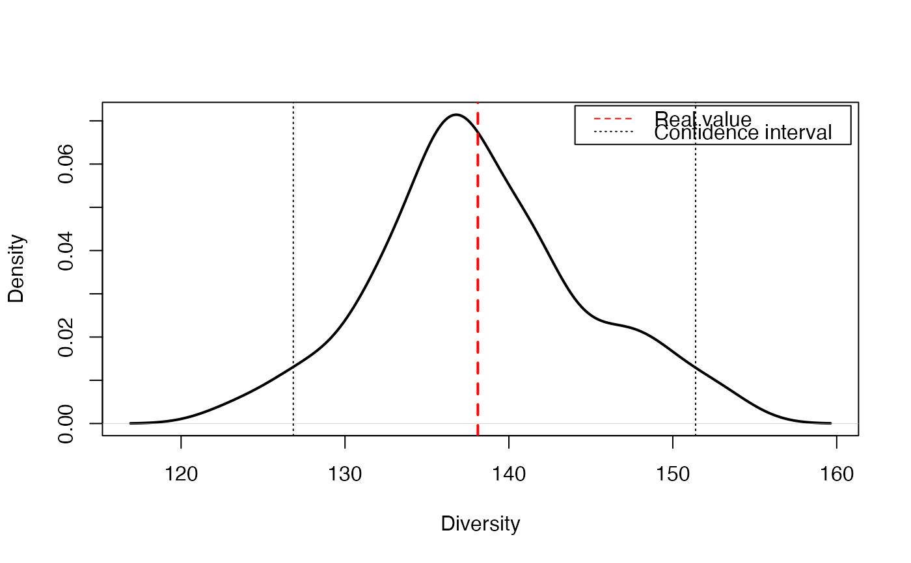

Entropy of Monte-Carlo simulated communities
EntropyCI.RdResamples a community by Monte-Carlo simulations of a multinomial distribution and returns a vector of entropy values to calculate confidence intervals.
Usage
EntropyCI(FUN, Simulations = 100, Ns, BootstrapMethod = "Chao2015",
ShowProgressBar = TRUE, ..., CheckArguments = TRUE)Arguments
- FUN
The entropy function to be applied to each simulated community. May be any entropy function accepting a vector of species abundances, such as
bcTsallis,bcShannon,bcSimpsonorbcPhyloEntropy.- Simulations
The number of simulations to build confidence intervals.
- Ns
A numeric vector containing species abundances.
- BootstrapMethod
The method used to obtain the probabilities to generate bootstrapped communities from observed abundances. See
rCommunity.- ...
Additional arguments to be passed to
FUN.- ShowProgressBar
If
TRUE(default), a progress bar is shown.- CheckArguments
Logical; if
TRUE, the function arguments are verified. Should be set toFALSEto save time when the arguments have been checked elsewhere.
Details
This function is used to obtain the distribution of entropy and eventually calculate confidence intervals. It draws simulated communities according to a multinomial distribution with the same number of individuals and probabilities as the actual community. It calculates the entropy of each simulated community. Last, it recenters the distribution of entropy values arounf the actual value of entropy according to Marcon et al. (2012): the estimation bias of simulated communities entropy can not be corrected analytically, but it does not affect the distribution shape.
Diversity can not be recentered this way so diversity function should not be used. Unexpected results will be obtained if inappropriate functions are used.
References
Marcon, E., Herault, B., Baraloto, C. and Lang, G. (2012). The Decomposition of Shannon's Entropy and a Confidence Interval for Beta Diversity. Oikos 121(4): 516-522.
Examples
# Load Paracou data (number of trees per species in two 1-ha plot of a tropical forest)
data(Paracou618)
# Abundance (all estimators will include bias corrrection)
Ns <- as.AbdVector(Paracou618.MC$Ns)
q <- 1
# Estimate entropy and transform it into diversity
RealEst <- expq(Tsallis(Ns, q), q)
# Transform the distribution of Tsallis entropy into diversity
SimulatedDiversity <- expq(EntropyCI(Tsallis, Simulations=50, Ns, q=q), q)
#>
# Figure
plot(density(SimulatedDiversity), col="black", lwd=2, main="", xlab ="Diversity")
abline(v=RealEst, col="red", lwd=2, lty=2)
abline(v=quantile(SimulatedDiversity, probs = 0.025), col="black", lwd=1, lty=3)
abline(v=quantile(SimulatedDiversity, probs = 0.975), col="black", lwd=1, lty=3)
legend("topright", c("Real value", "Confidence interval"), lty=c(2,3),
col=c("red", "black"), inset=0.01)

# Print results
cat("Estimated Diversity:", RealEst)
#> Estimated Diversity: 138.1078
quantile(SimulatedDiversity, probs = c(0.025, 0.975))
#> 2.5% 97.5%
#> 126.8446 151.3915